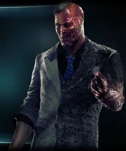

A trama se passa logo após o Espantalho ameaçar Gotham com uma arma química, o que causa uma evacuação completa da cidade. Boa “desculpa” pro jogador só encontrar criminosos pelas ruas e não se preocupar em atropelá-los com o batmóvel (que tem um campo de força semi-mágico que, de alguma maneira, impede que eles morram com o impacto). Indo atrás de seu inimigo desfigurado por Killer Croc no primeiro game, o jogador vai se deparar com um novo personagem, o Arkham Knight, cuja identidade é um mistério. O enredo se desenrola a partir daí e, como toda boa história, fica cada vez mais interessante. E cada vez mais sombrio.
GAMEPLAY
A Rocksteady nunca fez segredo que queria implementar o Batmóvel na franquia e Arkham Knight deixa claro o porquê: era só isso que faltava para a experiência final de “simulador de Batman” do jogo. Depois de finalmente dominar os novos elementos trazidos pelo veículo, é de uma satisfação difícil de descrever para os fãs do Batman poder saltar para fora e para dentro do carro, de maneira fluida e natural. Alcançar uma missão e se lançar para fora do Batmóvel para planar com precisão até o objetivo dá até vontade de dizer “I'm Batman”.
TRILHA SONORA
O elenco de vozes escaladas para dublar este título é impecável. O destaque aqui vai, sem dúvida, para John Noble dublando o Espantalho. É ameaçador, profundo e rancoroso, mas ao mesmo tempo mostra uma calma e um controle que um super vilão precisa ter para dominar uma cidade pelo medo. Mas não só o elenco de vozes, a trilha sonora, a sonoplastia (principalmente dos gadgets), tudo apenas contribui para a imersão do jogador.
GRAFICOS
Os gráficos de Arkham Knight foram o ponto mais polêmico deste lançamento, porque o que eles têm de ruim na performance do PC, eles têm de bom na dos consoles. O lançamento da versão do game na Steam foi terrível, mas a performance que ele alcançou no Xbox One é surpreendente. É possível dizer que o cuidado da Warner para os vídeo games foi tão grande quanto seu descaso para os PCs.
Duas-Cara
O promotor Harvey Dent era um dos maiores aliados do Batman em Gotham City, até que um criminoso lançou ácido em seu rosto, o desfigurando horrivelmente. Os ferimentos afetaram sua psique, e ele renasceu como Duas-Caras, gênio do crime esquizofrênico, obcecado com dualidade. Seu talismã, uma moeda de prata de "duas cabeças", foi danificada em um dos lados em um ataque, e Dent se apegou a ela como um reflexo de sua aparência semidesfigurada.
O Coringa
Um supervilão insanamente homicida. A pele branca, cabelos verdes e lábios vermelhos do Coringa escondem sua natureza caótica sob uma aparência cartunesca. O autoproclamado Príncipe Palhaço do Crime não tem nenhum poder além da capacidade incrível para gerar violência e caos mortais. Ele frequentemente inventa esquemas elaborados para capturar s eu arqui-inimigo, o Batman.
Alerquina
Psiquiatra do Asilo Arkham, designada para cuidar do Coringa, a Dra. Harleen Quinzel acabou ficando obcecada por seu paciente, acreditando estar apaixonada por ele. Ela o ajudou a fugir e assumir sua própria identidade criminosa: Arlequina, uma criminosa violenta e imprevisível cuja única motivação era conseguir a aprovação do Coringa.
Aqui temos outros jogos da franquia Batman Arkham.

28/10/2015 | Capitulo 1

Pela primeira vez na série Arkham, assuma o papel do implacável vigilante Capuz Vermelho e use novos movimentos, aparelhos e duas pistolas para tentar destruir um vasto império criminoso
Saiba mais28/10/2015 | Capitulo 2
Em um parque de diversões abandonado no litoral de Gotham, Batgirl e Robin precisam se unir em uma batalha desigual para salvar o pai de Barbara e não serem vítimas do plano sinistro do Coringa. Treinada pelo Batman, a Batgirl soma suas letais técnicas de combate a habilidades de ciberinvasão sem igual para derrotar inimigos, controlar objetos e resolver quebra-cabeças. Explore o sinistro Parque Seagate nesta aventura repleta de ação que culmina no confronto definitivo entre os bons, os maus e o mentalmente insano.
28/10/2015 | Capitulo 3
Pela primeira vez na série Arkham, assuma o papel da comparsa psicótica do Coringa, a Arlequina, e semeie o caos no Departamento de Polícia de Blüdhaven ao esmagar, destruir e detonar tudo no caminho para salvar uma amiga em grandes apuros. Com este Pacote de História exclusivo, viva os eventos que dão início a Arkham Knight ao infiltrar-se em Blüdhaven para resgatar sua parceira no crime: Hera Venenosa. Com o taco de beisebol em punho, atraia inimigos desavisados com o Brinquedo de Mola, envolva-os na Armadilha ou lance mão do Modo Caos para viver em primeira mão a natureza caótica da Arlequina.